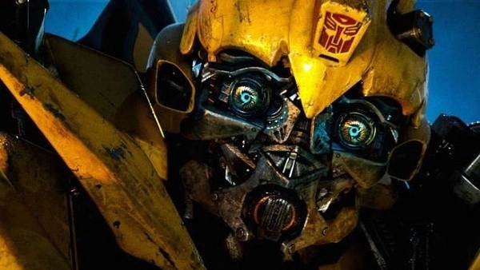
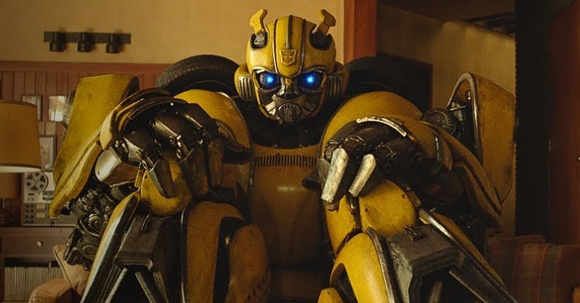
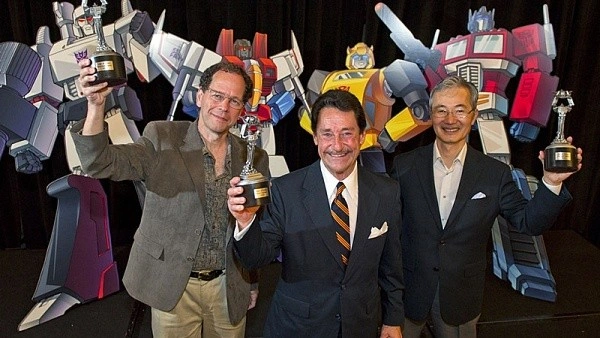

Desde o nascimento de The Transformers em 1984 que Bumblebee é um favorito dos fãs.
Ele sempre foi visto como um dos Autobots mais fracos, mas definitivamente o mais generoso e corajoso do grupo.
Por isso, Bumblebee foi sempre admirado não só por seus companheiros mas também pelos humanos.
Na série original, Bumblebee era na verdade um Volkswagen Beetle, conhecido como Bug, e suas cores eram amarelas e pretas.
Além disso, as portas do carro formavam asas quando abertas.
Foi por essas razões que o Autobot ganhou o nome Bumblebee (zangão em português).

Sim, existe uma Hall of Fame dos Transformers. A partir de 2010, a Hasbro quis honrar não só seus personagens mais populares mas também as pessoas por detrás dos brinquedos, das séries e dos filmes.
Dois dos mais notáveis humanos com lugar nessa Hall of Fame são Michael Bay e Peter Cullen, que dá a voz a Optimus Prime.
Bumblebee, sendo um dos personagens mais adorados, foi um dos primeiros cinco Transformers a ser introduzido na Hall of Fame, junto com Optimus Prime, Megatron, Starscream e os Dinobots.
